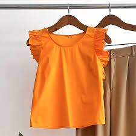

Ketoda
"Ketoda" es un término que se refiere a una actitud positiva, divertida y con buena onda, asociada a un estilo de vida cool. Se utiliza para describir a personas con una actitud "superadora", que transmiten energía y buen humor.
Nosotras tenemos las mejores prendas para que tu estilo nunca deje de representar la KETODA que hay en vos...
Ofertas hasta agotar stock
Blusa Celeste M
